Building Models for Time Series Analysis
by Phil Roth
In my last post, I talked about the different Python projects I used to put together a pipeline for network security data. In this post, I’ll talk about how I used the scientific computing software stack in Python (numpy, scipy, and pandas) to build a model around that data and detect outliers. We left off last week with a pandas DataFrame containing example data:
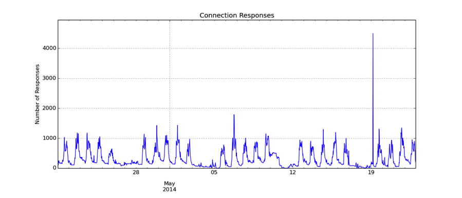
This plot is an example taken from the database that shows the number of times an IP responds to connection requests over time. In order to find potential security threats, I’d like to find outliers in this and any other time series. In order to find outliers, I need to build a model around what I believe is normal behavior based on past data.
The most simplistic approach to building a model is to take the mean and standard deviation of the data I’ve seen so far. I can then treat the mean as a prediction of the next value and generate an alert when the actual value exceeds a configurable number of standard deviations from that prediction. The results of that simple algorithm are shown below:
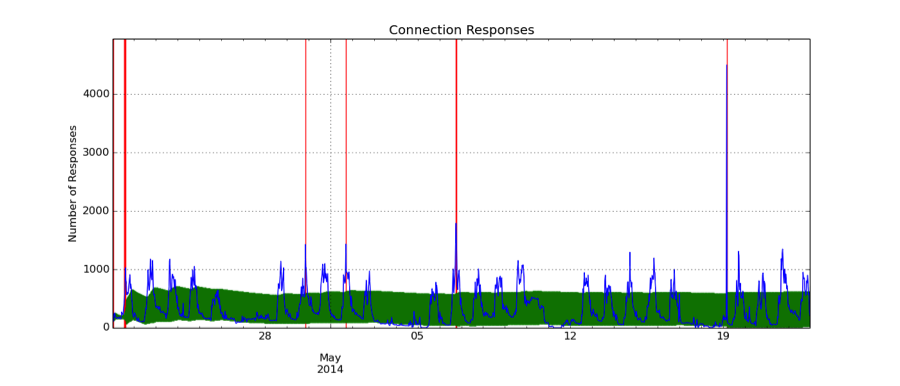 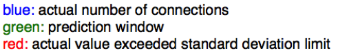
In this plot and the ones that follow, the actual number of connections observed is in blue. The green window is centered on the prediction made for that time bin and extends one standard deviation in each direction. A red vertical line is drawn when the actual data is a configurable distance away from that prediction window.
As you can see in this first model, the prediction window is not highly correlated with the data and the spread is very large. A better model would be to fit the data to a sine curve using the tools that scipy provides. The prediction is the fit value and the standard deviation is derived from the residuals to the fit:
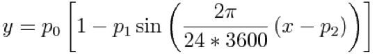
from scipy.optimize import leastsq
def fitfunc(p, x) :
return (p[0] * (1 - p[1] * np.sin(2 * np.pi / (24 * 3600) * (x + p[2]))))
def residuals(p, y, x) :
return y - fitfunc(p, x)
def fit(tsdf) :
tsgb = tsdf.groupby(tsdf.timeofday).mean()
p0 = np.array([tsgb[“conns”].mean(), 1.0, 0.0])
plsq, suc = leastsq(residuals, p0, args=(tsgb[“conns”], np.array(tsgb.index)))
return plsq
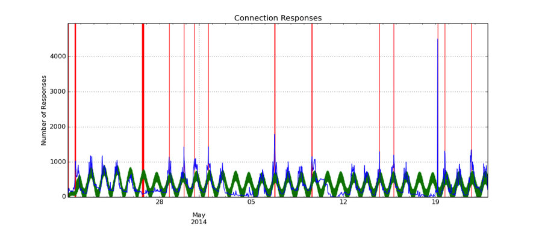
At least on weekdays, the prediction mirrors the data better and the window is tighter. But we can improve these models even further. When looking through the data, it became apparent to me that different kinds of metrics required totally different models. I therefore developed a method for classifying the time series by asking two different questions:
- Does this metric show a weekly pattern (i.e. different behavior on weekdays and weekends?)
- Does this metric show a daily pattern?
In order to answer the first question, I fit the sine curve displayed above to the data on weekdays and weekends separately and compared the overall level of the fit (the p0 parameter in the equation above). If the levels differed, then I would build a model for the weekday data separately from the weekend data. If the overall levels of those fits were similar, then I kept that time series intact.
def weekend_ratio(tsdf) :
tsdf['weekday'] = pd.Series(tsdf.index.weekday < 5, index=tsdf.index)
tsdf['timeofday'] = (tsdf.index.second + tsdf.index.minute * 60 + tsdf.index.hour * 3600)
wdayplsq = fit(tsdf[tsdf.weekday == 1])
wendplsq = fit(tsdf[tsdf.weekdy == 0])
return wendplsq[0] / wdayplsq[0]
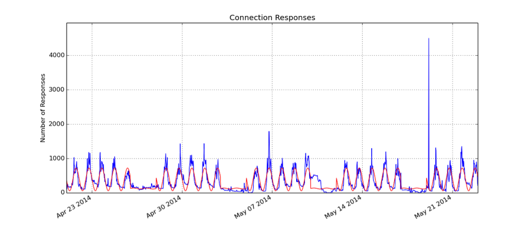
In the plot above, I show the weekday and weekend fits in red. For this data, the behavior of the time series on weekdays and weekends was different enough that I decided to treat them separately.
The next step is to determine if the time series displays daily patterns. In order to do this, I use numpy to take the Fourier transform of the time series and inspect the bins associated with a frequency of a day. I sum the three bins closest to that frequency and compare them to the first bin or the DC component. If the sum is large enough compared to that first bin, then the time series is classified as having a daily pattern.
def daily_ratio(tsdf) :
nbins = len(tsdf)
deltat = (tsdf.index[1] - tsdf.index[0]).seconds
deltaf = 1.0 / (len(tsdf) * deltat)
daybin = int((1.0 / (24 * 3600)) / deltaf)
rfft = np.abs(np.fft.rfft(tsdf[“conns”]))
daily_ratio = np.sum(rfft[daybin - 1:daybin + 2]) / rfft[0]
return daily_ratio
Plots are sometimes the best way to explain these results, so I show two examples of the procedure below. In the first example, I show all the weekday data together in blue and the Fourier transform of that data in green. Red lines highlight the values corresponding to the frequency of a day in the Fourier transform data. The spike there is obvious and indicates a strong daily pattern.
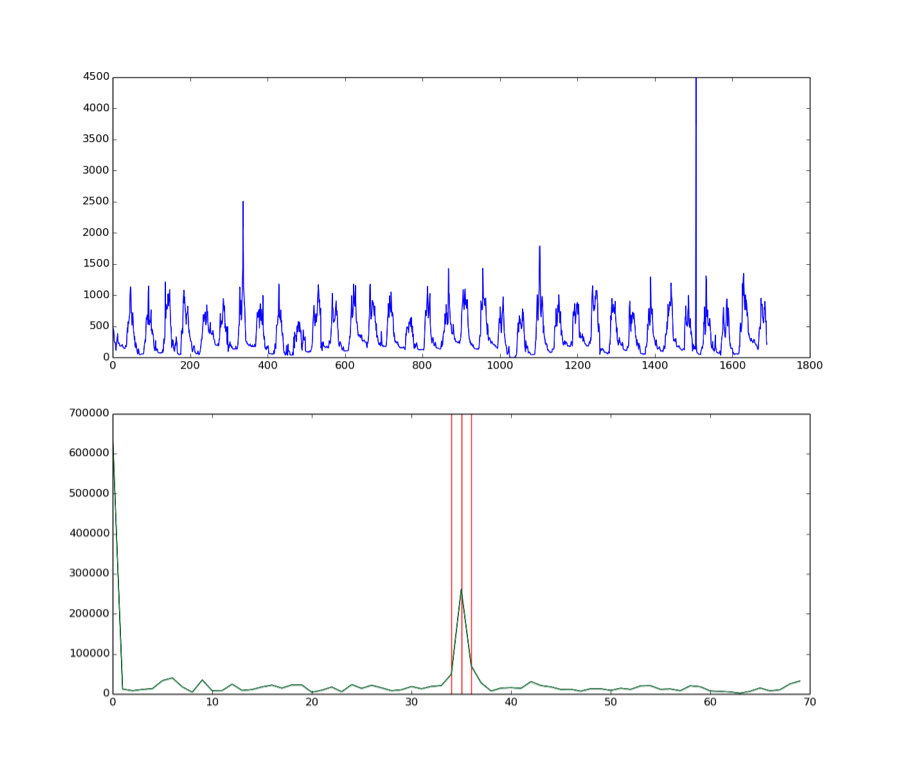
The next figure shows the second example of the daily classification procedure. Here, the weekend data is combined in blue and the Fourier transform of that is in green. The Fourier transform data is flat and tells me that there is no daily pattern in this data.
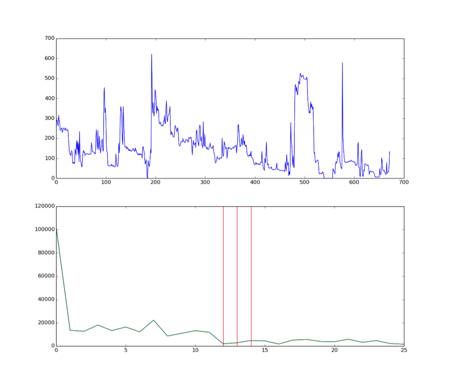
The next step in the analysis is to apply a predictive model to the weekdays and weekends separately. In both cases, I apply an exponentially weighted moving average (EWMA). This calculation weights more recently occurring data more heavily in the calculation of an average. Trends and events in the past have less and less of an effect on future predictions. It’s a very simple calculation to do in pandas:
def ewma_outlier(tsdf, stdlimit=5, span=15) :
tsdf[’conns_binpred’] = pd.ewma(tsdf[‘conns’], span=span).shift(1)
tsdf[’conns_binstd’] = pd.ewmstd(tsdf[‘conns’], span=span).shift(1)
tsdf[‘conns_stds’] = ((tsdf[‘conns’] – tsdf[’conns_binpred’]) /
tsdf[‘conns_binstd’])
tsdf[‘conns_outlier’] = (tsdf[‘conns_stds’].abs() > stdlimit)
return tsdf
For time series that show no daily pattern, such as the weekend days of the example data we’ve been working with, I calculate the moving average and standard deviation and flag outliers when the actual data is a certain number of standard deviations away from the average. This procedure works best for data that does not vary significantly over time. It does not work as well when predictable daily patterns are present. In this case, the moving average lags the actual data in a predictable way that I should be able to account for. I’ve been calling this method a “stacked EWMA” because I group the data by time of day and stack each day on top of another. The next scatter plot shows the data stacked in this way.
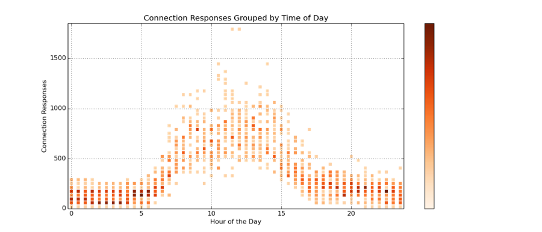
Each vertical line corresponds to the number of connection responses occurring during a certain time of day over the span of about three weeks. Now I track the EWMA of the data in each of those vertical lines separately. This is illustrated in the next plot.
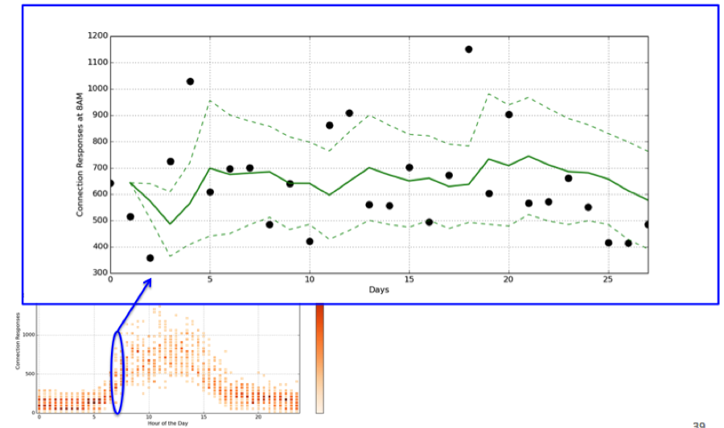
Here, the number of connection responses between 8AM and 8:30AM are expanded over the range of days on which they were collected. The green solid line shows the EWMA calculated from just those points and the dashed green line shows the edges of the prediction window. The same analysis is carried out for each time of day bin. After it’s completed, I have a prediction window for each bin that’s based on what’s happened at this time of day over the previous days and weeks. Here is the code that completes this stacked analysis:
def stacked_outlier(tsdf, stdlimit=4, span=10) :
gbdf = tsdf.groupby(‘timeofday’)[colname]
gbdf = pd.DataFrame({‘conns_binpred’ : gbdf.apply(pd.ewma, span=span),
‘conns_binstd’ : gbdf.apply(pd.ewmstd, span=span)})
interval = tsdf.timeofday[1] - tsdf.timeofday[0]
nshift = int(86400.0 / interval)
gbdf = gbdf.shift(nshift)
tsdf = gbdf.combine_first(tsdf)
tsdf[‘conns_stds’] = ((tsdf[‘conns’] – tsdf[‘conns_binpred’]) / tsdf[‘conns_binstd’])
tsdf[‘conns_outlier’] = (tsdf[‘conns_stds’].abs() > stdlimit)
return tsdf
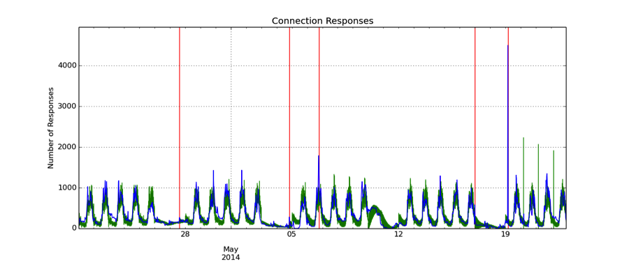
This last plot shows the final result when the weekday and weekend models are executed and combined in the same figure. Daily patterns are predicted and accounted for. Flat periods during the weekends are well tracked. In further testing, this prediction model is very robust to different types of time series.
In the future, I’d like to create some metric for judging different prediction models that adequately penalizes for false positives and false negatives. I’d also like to further experiment with ARIMA (autoregressive integrated moving average) models and automatically finding repeated patterns instead of counting on them occurring in daily and weekly time spans. Also, a different technique will probably be necessary for time series with low statistics.
Thanks so much for reading. I hope you’ve learned a bit about the simplicity and power of working with the scientific computing stack in Python and its applications to network security data. I’ve posted the slides from which this material was taken here.